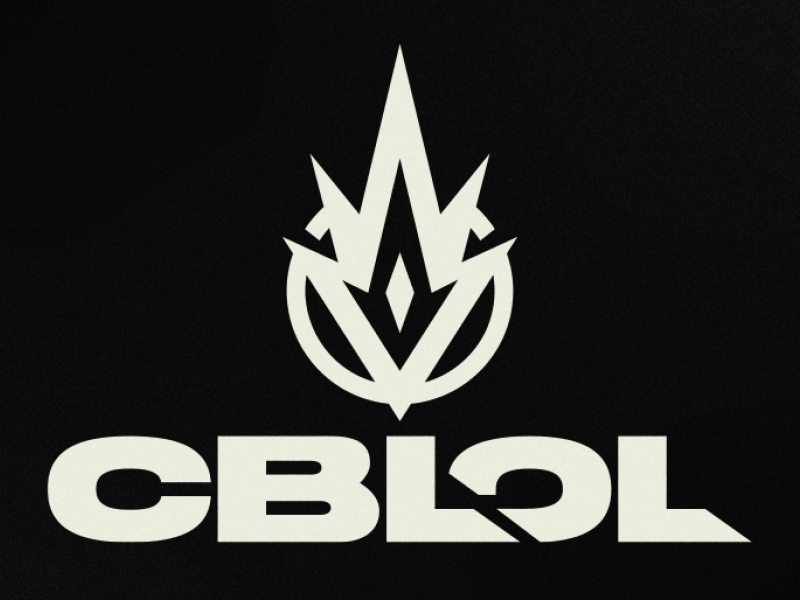
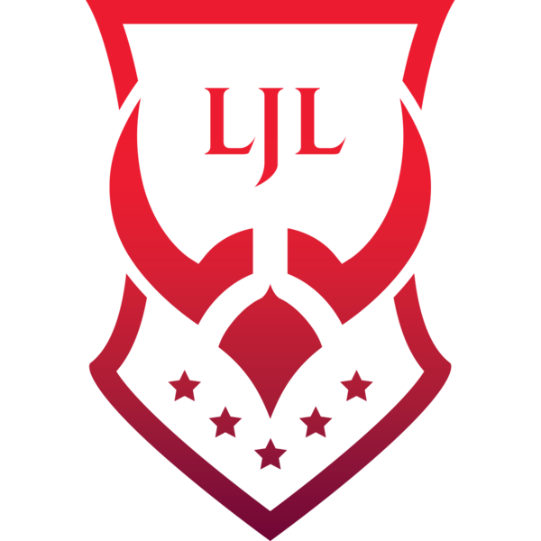

CBLoL é a sigla para Campeonato Brasileiro de League of Legends. A competição integra a
Temporada
Brasileira de League of Legends e elege as melhores equipes do Brasil que concorrem a uma vaga
pelo título mundial. As partidas são disputadas aos sábados e domingos, com transmissão ao vivo
nos canais do YouTube e Twitch da empresa. Conheça mais detalhes sobre o torneio nos próximos
parágrafos.
League of Legends Championship Series (LCS) é o nome de duas ligas profissionais de League of
Legends da Riot Games. Ao todo, são 20 equipes que disputam em duas competições separadas, a LCS
NA (América do Norte) e a LCS EU (Europa).
Criada em agosto de 2012, a liga possuía oito equipes em cada divisão, e foi apelidada de
“Season 3”, por ter sido lançada no terceiro ano do LoL. O formato da competição foi ajustado ao
longo dos anos. Atualmente, cada LCS é composta por 10 equipes que enfrentam todas as outras
duas vezes ao longo da temporada, totalizando de 18 jogos cada. As partidas são disputadas no
formato MD1, com cada time jogando uma vez por dia. A competição se estende por duas divisões:
primavera e verão.
A League of Legends Championship Europeia ( LEC ), anteriormente conhecido como o European
League
of Legends Championship Series ( LCS UE ), é o nome do profissional League of Legends eSports
liga corrida pela Riot Games , em que as equipes dez competir. Cada temporada anual de jogo é
dividida em duas divisões, primavera e verão, ambas consistindo em nove semanas de torneio round
robinjogo, que então termina com torneios de desempate entre as seis melhores equipes. No final
da temporada, o vencedor da divisão de verão, a equipe com mais pontos no campeonato e o
vencedor do torneio de manopla se classificam para o Campeonato Mundial anual de League of
Legends . O LEC representa o nível mais alto de jogo de League of Legends na Europa.
League of Legends Champions Korea ( LCK ) é a competição primária para os esportes eletrônicos
de
League of Legends na Coréia do Sul. Disputada por dez equipes, a liga funciona duas temporadas
por ano e serve como uma rota direta para a qualificação para o Campeonato Mundial anual da
League of Legends . O LCK é administrado em cooperação entre a Riot Games e a KeSPA .
A liga era anteriormente chamada de League of Legends Champions antes de passar por uma grande
reestruturação no final de 2014, que viu uma mudança no formato da competição e um rebranding ao
seu nome atual. A OGN reservou os direitos de transmissão exclusivos da liga até 2016, quando os
direitos foram divididos com a SPOTV Games. Em 2019, a Riot Games assumiu a transmissão da
LCK. Em 2021, a franquia LCK , e Challengers Korea (CK) e o torneio promocional LCK
foram descontinuados.
A League of Legends Pro League ( LPL ) é a liga profissional de nível superior para League of
Legends na China . A primeira temporada da LPL foi a temporada de primavera de 2013. Os três
primeiros colocados do torneio playoff recebem lances automáticos para o Campeonato Mundial de
League of Legends . Os playoffs são uma eliminação única de oito equipes, sendo cada etapa uma
série de melhor de cinco. O prêmio total é de ¥ 2.350.000. Em 2014, a Riot Games começou a
fornecer uma transmissão em inglês. O formato segue o modelo do League of Legends Champions
Korea na Coreia do Sul.
A League of Legends Master Series ( LMS ) foi uma liga profissional da League of Legends com
times de Taiwan , Hong Kong e Macau de 2015 a 2019. Oito times competiram em duas temporadas
para se qualificar para o Campeonato Mundial de League of Legends . Em setembro de 2019, a Riot
anunciou que o LMS se fundiria com o League of Legends SEA Tour (LST) para criar uma nova liga
profissional para todas as regiões afiliadas à Garena , exceto Vietnã, a Pacific Championship
Series (PCS).

A League of Legends Continental League ( LCL ) é o nível superior da competição profissional
de League of Legends na Comunidade dos Estados Independentes , organizada pela Riot Games
Rússia. Ele substituiu o SLTV StarSeries que foi organizado pela StarLadder em 2016. Há oito
times na liga. Cada temporada anual de jogo é dividida em duas divisões, primavera e verão,
ambas consistindo em cinco semanas de torneio round-robin duplojogo, que então termina com um
torneio de eliminação simples play-off entre as quatro primeiras equipes. Os vencedores de cada
divisão se qualificam para o Mid-Season Invitational e o Campeonato Mundial.
A Liga Latinoamérica ( LLA ; "Liga da América Latina") é o nível superior da League of
Legends profissional na América Hispânica . A liga de esportes é administrada pela Riot Games
Latin America. Cada temporada competitiva anual é dividida em temporadas de abertura e
fechamento, que terminam com um torneio de playoff entre as quatro primeiras equipes.
Os planos para a liga foram anunciados pela primeira vez em maio de 2018 pela Riot Games, que
afirmou que iria unir as duas ligas regionais da América Latina, a Liga Latinoamérica Norte (
LLN , Liga da América do Norte) e a Copa Latinoamérica Sur ( CLS , Copa da América Latina do
Sul) , em uma única competição.
A TCL Summer 2020 - Turkish Championship League é o nível superior da League of
Legends profissional na Turquia .A liga de esportes é administrada pela Riot Games
Turquia. Cada temporada competitiva anual é dividida em temporadas de abertura e
fechamento, que terminam com um torneio de playoff entre as quatro primeiras equipes.

A League of Legends Japan League ( LJL ) é o nível superior da competição profissional de League
of Legends no Japão. A liga foi franqueada antes do início da temporada de 2019 e
tem oito times em parceria . Cada temporada anual de jogo é dividida em duas divisões,
primavera e verão, ambas consistindo em dez rodadas de torneios round-robin, que então concluem
com torneios de playoff entre as três primeiras equipes. Os campeões da primavera e do verão se
qualificam para o Mid-Season Invitational e o World Championship, respectivamente.
A Oceania Player League (OPL), é o nível superior da competição profissional de League
of Legends na Oceania.
No ano de 2020 OPL foi retirada das ligas profissionais de League of Legends.
OPL não atingiu os objetivos estabelecidos pela publisher, como crescimento comercial e
engajamento de fãs.
O League of Legends SEA Tour ( LST ) foi um torneio profissional de esports do League of Legends
no sudeste da Ásia, fundado em 2018 por Garena como substituto da Garena Premier League (GPL). A
competição consistiu em equipes que se classificaram através das eliminatórias LST de cada
região menor: Indonésia - Malásia - Cingapura , Filipinas e Tailândia . Os vencedores do LST
representaram o Sudeste Asiático no Mid-Season Invitational e no Campeonato Mundial .
Foi anunciado em setembro de 2019 que a LST seria fundida com a League of Legends Master Series
(Taiwan / Hong Kong / Macau) para criar uma nova liga profissional para todas as regiões
afiliadas ao Garena (exceto Vietnã), a Pacific Championship Series (PCS).
Campeonato Mundial de League of Legends é um campeonato internacional anual de esporte
eletrônico voltado para o game League of Legends, organizado pela empresa americana Riot Games.
As equipes competem pelo título de campeão, pela Taça do Invocador e pelo prêmio de
aproximadamente US$1.000.000 (2015). As equipes são formadas sempre por no máximo 6 membros
incluindo o técnico, que não precisam ser necessariamente de uma única nacionalidade. O evento é
bastante prestigiado atualmente pelos fãs de jogos eletrônicos e tem atraído alguns olhares
importantes de televisões abertas do mundo inteiro e patrocinadores significativos.
Mid-Season Invitational mais conhecido como MSI é um torneio internacional de League of Legends
realizado anualmente desde sua criação em 2015 por sua desenvolvedora a Riot Games. Realizado na
metade da temporada entre o mês de Maio é a segunda competição internacional mais importante,
ficando atrás apenas do Campeonato Mundial, realizado no fim da temporada entre Outubro e
Novembro. O evento reúne, desde 2017, todos os 13 campeões das etapas as ligas regionais do
game.